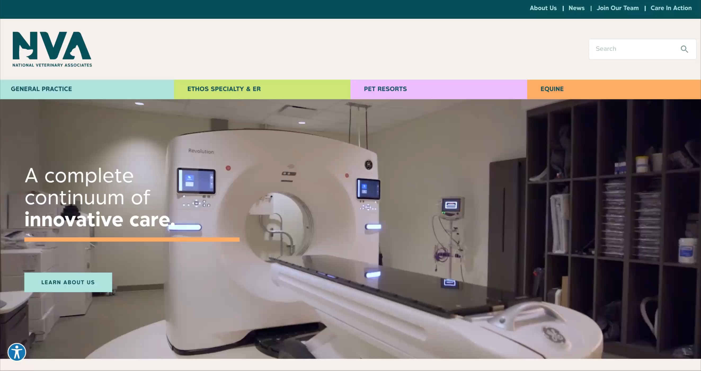

Case study
NVA
A continuum of care for veterinary practices and the people who run them.
Overview
National Veterinary Associates needed one story for four kinds of care: general practice, Ethos specialty and ER, pet resorts, and equine. The work was to make that continuum obvious on the site and in the brand, not four disconnected properties.

Problem
People arriving to NVA could not tell which door was theirs. Specialty, boarding, and general practice competed for the same homepage attention. The brand also needed a system that could hold all four without looking like four different companies.
Approach
- Color-coded primary nav for each care line, always in the same order.
- One hero line — “a complete continuum of innovative care” — instead of four competing pitches.
- A shared wordmark with a General Practice lockup as the home brand.
Outcome
The site reads as one network. Care lines stay distinct in color and language, but they sit on a single path. Next: carry the same IA into interior templates and location search.